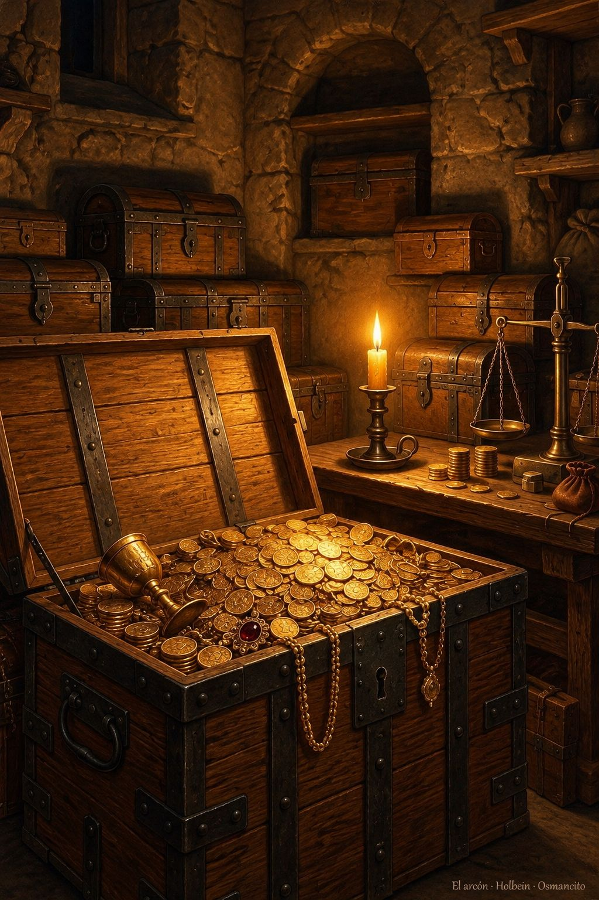

Tesorería
Tesorería es la oficina o despacho del tesorero, y el tesorero es la persona encargada de custodiar y distribuir los caudales, según el Diccionario de la lengua española. La palabra viene de «tesorero», que viene del latín tardío thesaurarius, derivado de thesaurus, «tesoro»: en latín nombraba lo guardado y también el lugar donde se guarda.
Esta sala guarda estudios del dinero y de los activos. Un activo es un producto que se compra y se vende en un mercado. Cada informe reúne lo que dicen las fuentes abiertas, declara lo que no pudo comprobar y no recomienda comprar ni vender: informa, no aconseja operar.
- Ranking de capitalización: De Bitcoin, que pesa más que todas las demás juntas, a la más pequeña: los activos con par USDT al contado en Binance, ordenados por su capitalización de mercado.
- Visual horse: Carrera de activos según el mínimo y el máximo de las últimas 24 horas, con datos en vivo de CoinGecko.
- Zcash: diez años de dinero privado: Qué es Zcash, cómo llegó a su máximo en diez años y qué decide esta semana la actualización NU7.
- Liquidez y estructura del mercado: Qué es la liquidez de un mercado, quién la sostiene y qué pasó en octubre de 1987, según Grossman y Miller.
- Los ocho maestros del trading: Ocho autores elegidos como maestros para aprender a operar en los mercados desde cero.